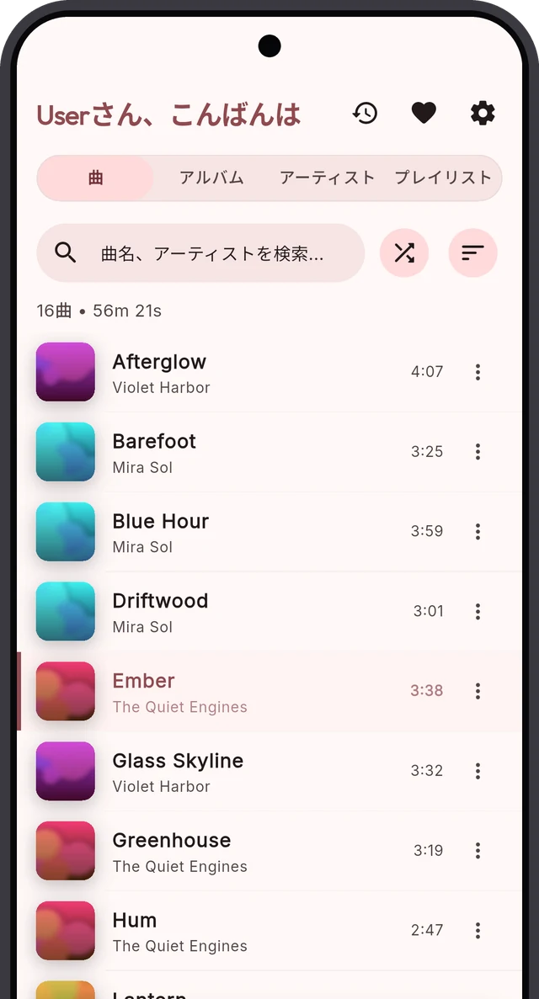
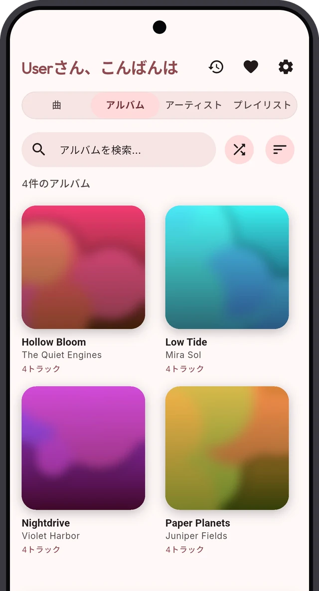
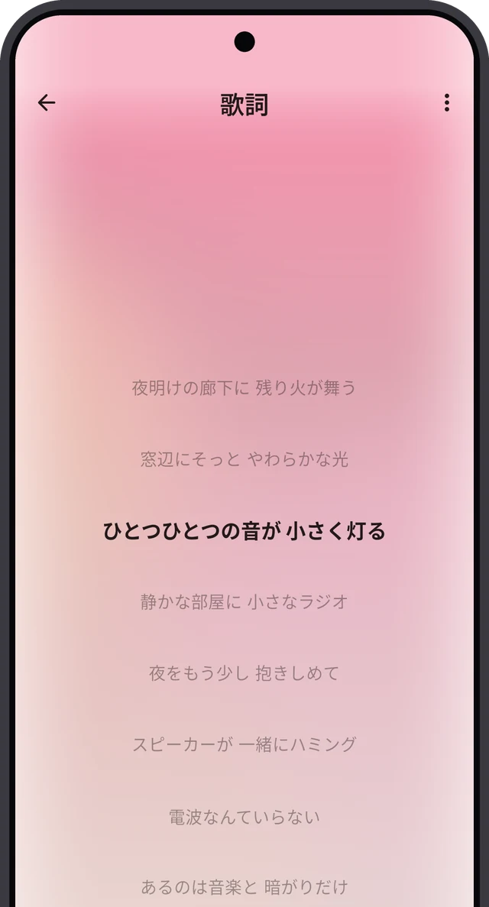
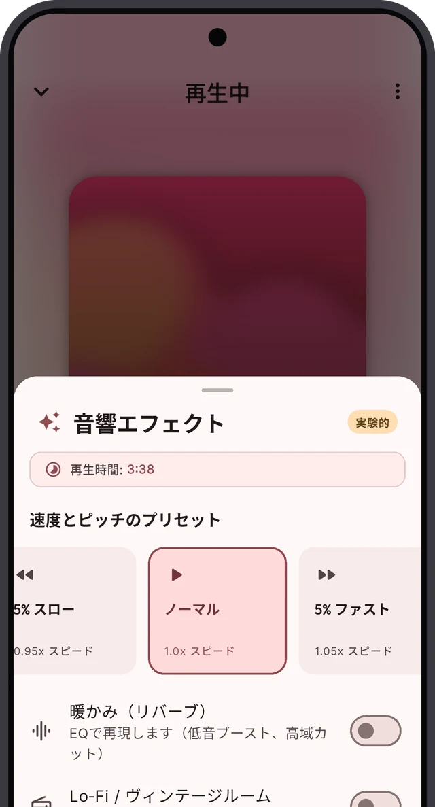
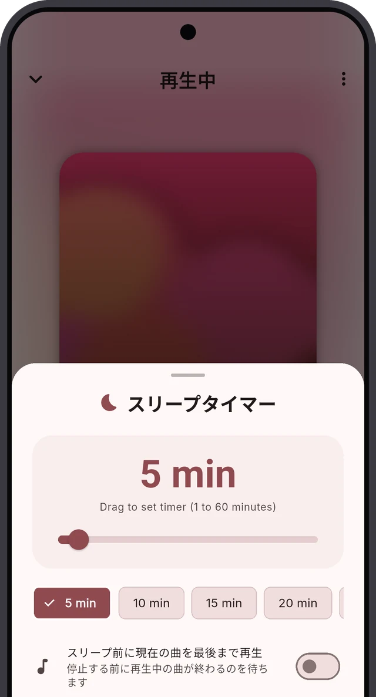

画面を見る
あなたのライブラリを、真ん中に。
すべての曲を、ひとつのリストに
ライブラリ全体を検索、並べ替え、シャッフルできます。

ジャケットで選ぶ
アルバム、アーティスト、プレイリストはスワイプですぐ。

ジャケットに合わせて色が変わる
プレーヤーの色はアルバムアートから決まります。
架空のアーティストによるデモ用ライブラリです。
できること
あなたの音楽を、ただ再生するプレーヤー。
手持ちのファイルを再生
フォルダを選ぶだけ。ファイルはそのままの場所に残り、コピーもアップロードもされません。
オフラインで使える
アカウントもデータ通信も不要。ライブラリはいつでもそこにあります。
毎日の音楽のために
アルバム、アーティスト、プレイリスト、歌詞、検索がすべてワンタップ。
使い方
3 ステップで、すぐ音楽。
アプリをインストール
GitHub から APK をダウンロードして、スマホで開きます。 インストール方法
音楽フォルダを選ぶ
Sonora が一度スキャンして、ライブラリを最新に保ちます。
再生する
家でも電車でも飛行機でも。電波は不要です。
聴くための機能
必要なものは全部。余計なものはなし。
歌詞
歌詞を見ながら一緒に歌おう。
曲と同じフォルダに .lrc ファイルを置くと、Sonora が音楽に合わせて歌詞を表示します。行をタップするとその場所へジャンプ。通常の .txt 歌詞にも対応しています。
- 同期歌詞は自動でスクロール
- 同期するだけで自動的に見つかる
- ほかの機能と同じくオフラインで動作

サウンド
好みの音に整えよう。
マルチバンドイコライザー、ワンタップのプリセット、速度とピッチの調整。温かい音にしたり、低音を足したり、曲をゆっくりにして練習したり。
- プリセット: Warmth、Lo-Fi、Bass Boost
- 速度は 0.70 倍から 1.50 倍まで
- ヘッドホンやスピーカー向けの Bluetooth 設定

スリープタイマー
音楽と一緒に眠りにつこう。
1 分から 60 分まで選べます。Sonora が音楽をフェードアウトして自動で停止。再生中の曲が終わるまで待つこともできます。
- プリセットまたは好きな時間
- 今の曲が終わってから停止
- 通知から時間の追加やキャンセル

好きな色に
ライト、ダーク、真っ黒から選べます。色は壁紙やアルバムアートに合わせられます。
再生の統計
よく聴く曲、アルバム、アーティストと、合計の再生時間。統計はスマホの中にだけ残ります。
バックグラウンド再生
通知とロック画面から操作できます。アプリを閉じても音楽は流れ続けます。
対応環境
まずはスマホ。iPhone、車、パソコンにも。
Android スマホ
Android 7.0 以降。Sonora が一番活躍する場所です。
車とパソコン
車では Android Auto に対応。Windows 向けビルドにも対応しています。ソースは GitHub にあります。
ファイルはスマホの中に残ります。Sonora がコピーやアップロードをすることはありません。
ライブラリを、いつでも再生。
無料のオープンソース。Android と iOS に対応しています。